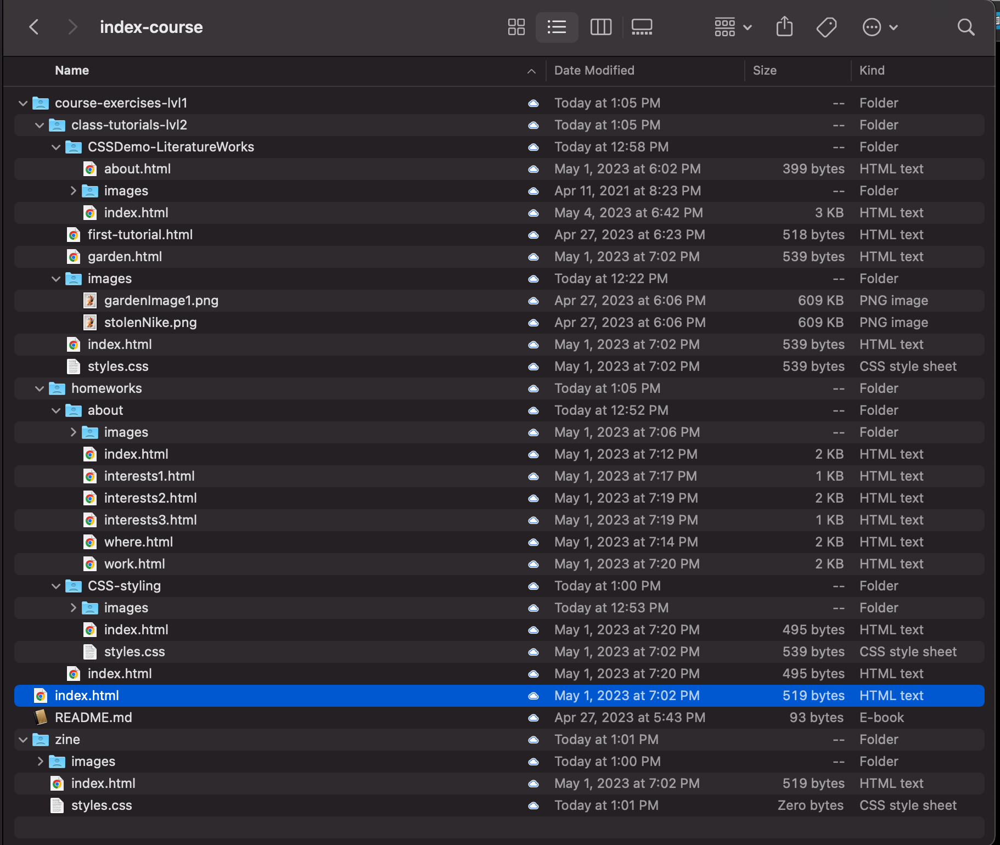

Folder Structure so Far

Here's a link to my folder structure on Google Drive
Take a look at your files in your course folder. Make sure this is what your folder structure looks like
- index-course
the levels inndicated below are just marking in which "depth" this directory is in your folder structure
- index
this is your main portal page, it should contain a link to your course exercises and your zine (by the end of week 3)
- images
This is where your images to the main class "portal" page would go
- image1.jpg
- ...(n).jpg
- Zine-Project
(you should have this by the end of wk3)
- index.html
- styles.css
- images
- course-exercises
- index.html
This is where your images the class exercises are going to
- class-tutorials
- index.htnl
This is a page conntaining links to the tutorials we do together in clas
- first-tutorial.html
- images
- garden.html
(you should have this by the end of wk3)
- styles.css
- images
- image-for-first-tutorial.jpg
- gardenImage1.jpg
(lvl-4)
(lvl-2)
(lvl-3)
- index.html
(lvl-1)
- index
- homeworks
- index.htnl
This is a page conntaining links to your homeworks
- CSS Article Styling (homework wk2)
- index.html
- styles.css
- images
- imageForArticle1.jpg
- Personal Page - About (homework wk1)
- index.html
- work.html
- where.html
- innterests1.html
- innterests2.html
- innterests3.html
- images
- profile.jpg
- interest1.jpg
- interest2.jpg
- interest3.jpg
- home.jpg
- work.jpg
(lvl-0)
(lvl-3)